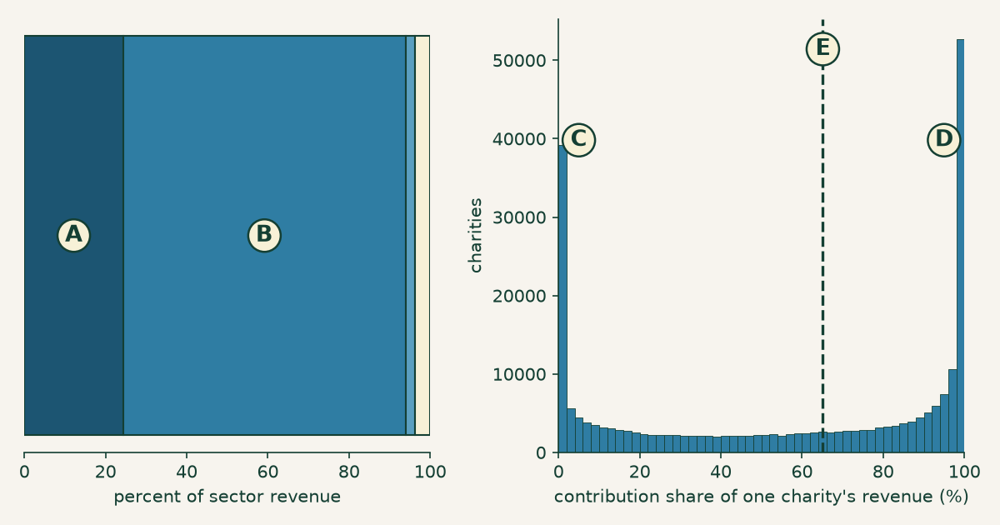
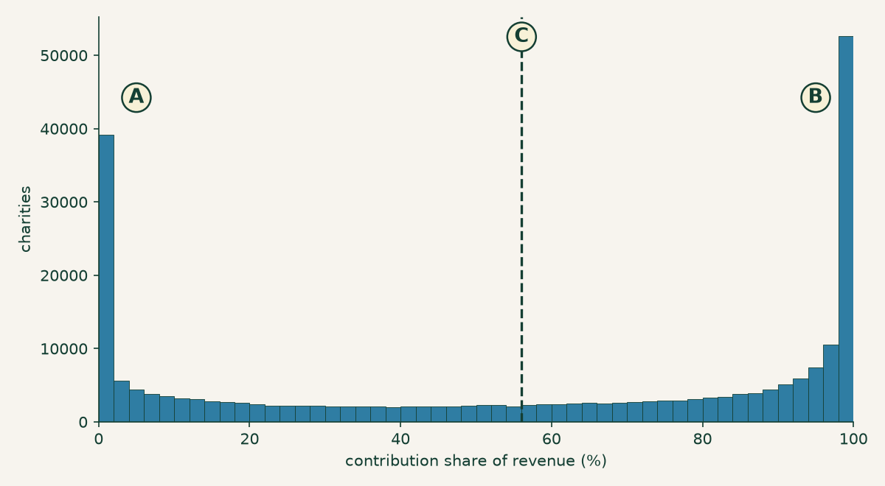
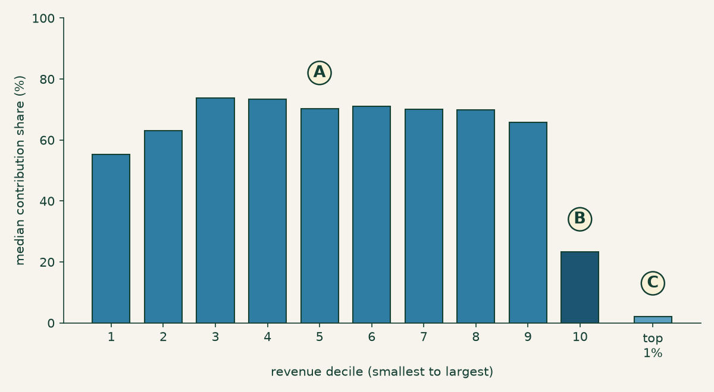
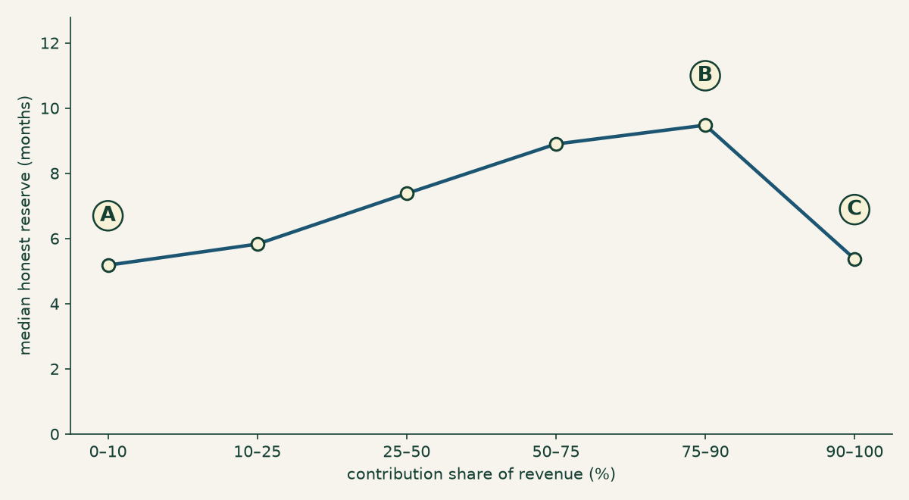

Nobody's average: who actually pays for the nonprofit sector
Charities run on donations. It is the sentence the whole sector is built on — the premise behind the year-end appeal, the gala, the watchdog rating, the phrase “donor-supported” on the side of the building. So it is worth running past the census. Take every Form 990 filed electronically in a year, add up all the money that came in, and ask how much of it was contributions and grants.
Twenty-four percent. Of the $3.10 trillion that flowed through 501(c)(3) public charities, $754.2 billion arrived as contributions and grants. The largest share by far — $2.16 trillion, 69.6 percent — was program service revenue: tuition, patient billing, ticket sales, program fees, contracts. Money charged, not given.
If that is a surprise, it should not be a new one: the Tax Foundation put program service revenue at 71 percent of nonprofit revenue for 2019, and the Urban Institute has tracked the same shape for years. Fee income dominating the sector’s dollars is a documented feature of this data, not a discovery, and the next section is about the ways my 24.4 percent is a cruder number than theirs.
The reason to keep reading is the other number: the median charity draws 65.1 percent of its revenue from contributions and grants. Not 24 percent. Two-thirds. And a third of all charities are more than 90 percent contribution-funded.
Both numbers are correct. They come from the same file, the same year, the same arithmetic. This post is about what has to be true for both of them to be true at once — and the answer turns out to be more interesting than either number, because it isn’t really a fact about giving at all. It is a fact about the word “sector.”
The census, not the survey
The IRS publishes an annual extract of every full Form 990 it received in a year, every line item, as one downloadable file — the same source the at-scale post used to compute the sector’s operating reserve, plumbed by the earlier mapping and extraction posts. The extract here covers returns filed in calendar year 2024, mostly fiscal 2023 books. After keeping only the latest tax period per EIN, 249,668 501(c)(3) public charities report positive revenue.
The arithmetic is embarrassingly simple. It is one division, done two ways (Code 1) — and the entire disagreement lives in the difference between them.
# Per charity: what share of THIS org's revenue was contributions?
cs = totcntrbgfts / totrevenue * 100
# Per dollar: what share of ALL revenue was contributions?
sector = totcntrbgfts.sum() / totrevenue.sum() * 100Code 1. The whole disagreement in two lines: the per-charity ratio and the sector ratio are different questions, and the second is not the average of the first.
What the 24 percent is, and isn’t
totcntrbgfts is Form 990 Part VIII, line 1h — the total of the
contributions block. And that block is not a synonym for philanthropy. Line 1h
sums federated campaigns, membership dues, fundraising events, related
organizations, all other contributions — and line 1e, government grants. The
extract publishes only the total. It carries no 1e, so nothing in this post can
separate a foundation grant from a county contract booked as a grant.
That distinction is not a rounding detail; it is about two-fifths of the number, as the IRS’s own published table shows — Table 1 below, built from 2019 third-party data on a narrower denominator, puts it a little higher. The Tax Foundation’s decomposition of 2019 data splits what my file cannot:
| Source | 2019 | Share |
|---|---|---|
| Program service revenue | $1.846T | 71% |
| Charitable contributions | $305B | 12% |
| Government grants | $240B | ~9% |
| Everything else | $216B | ~8% |
Table 1. What the contributions block contains, from a source that can see inside it. Private giving and government grants together come to about 21 percent of 2019 revenue — which is, allowing for growth, the 24.4 percent this post computes for filings in 2024. About two-fifths of “contributions and grants” is government money: the IRS’s published tax year 2022 table, which reports the split directly, puts government grants at 40.3 percent of the block — see checking our work.
So: when this post says a charity is “90 percent contribution-funded,” that does not mean 90 percent of its money came from donors. It means 90 percent arrived on line 1h, and for a food bank or a housing nonprofit a large slice of that is very likely a government grant. If the question you care about is private philanthropy, the answer is nearer 12 percent than 24, and this data cannot give it to you. Getting that number needs the e-file XML, where line 1e is reported separately.
What survives the distinction is everything the rest of this post is actually about. The line-1h ratio is computed identically for every organization, so the comparison between a charity’s ratio and the sector’s ratio — which is the argument here — is unaffected by what the line contains. It just has to be named honestly.
Two disclosures, because anyone rerunning this will hit both. First, about 7,320 organizations produce a contribution share outside 0–100 percent — a charity with a bad year on its investments can book negative revenue lines that make the ratio nonsense — so the per-charity figures below describe the 242,348 organizations whose ratio is interpretable. Second, the reserve section at the end reimposes the FASB reconciliation the at-scale post explains, because that calculation depends on Part X line 27; that is why its population is 195,437 rather than 242,348.
One more thing about the money. Contributions, program service revenue, and investment income ($73.8 billion, 2.4 percent) account for 96.4 percent of sector revenue. The remaining $113.1 billion — 3.7 percent — is rents, royalties, net gains on securities, special events, and a large miscellaneous category. It gets one bucket and no breakdown here, because the extract’s miscellaneous subtotals overlap each other and would double-count if I split them. Three clean categories and one honest remainder.
Two true answers

Figure 1. The same question, weighted two ways. Left, by dollars: every charity’s revenue poured into one bar, of which A is contributions (24.4 percent) and B is program service revenue (69.6 percent); the two slivers at the right edge are investment income and everything else. Right, by organization: the distribution of that same ratio computed one charity at a time, piling up at zero (C) and at one hundred (D), with the median at 65.1 percent (E, dashed). Same file, same year, same division. Same asset as the social card.
The left panel of Figure 1 asks where did the sector’s money come from. The right panel asks where does a charity’s money come from. These sound like the same question and they are not, because the first one lets big organizations vote with their revenue and the second gives every charity one vote.
The gap between them is enormous — 24.4 against 65.1 — and it is not a rounding artifact or a definitional quibble. It means that when someone says “the nonprofit sector is only a quarter contribution-funded,” they have said something true about dollars and something false about charities. And when someone says “charities run on donations,” they have said something true about charities and something false about dollars. Neither speaker usually knows which one they meant.
Nobody is average

Figure 2. The average describes almost no one. Contribution share for all 242,348 charities: A marks the pile at zero, B the pile at one hundred, and C the mean of 56.0 percent — which lands in the valley, one of the least-populated stretches of the whole distribution.
Look at where the mean falls in Figure 2. The average charity, by this measure, gets 56 percent of its revenue from contributions. Almost no charity does. The mean sits in the trough between two crowds, describing the few organizations that happen to be standing in the emptiest part of the room.
The piles are not soft. 26,657 charities report contributions of exactly zero, and 25,366 report revenue that is exactly, entirely contributions — together more than one in five organizations in the file sitting on a literal endpoint. Those are not rounding. A charity with no contributions at all and a charity with nothing else are not two draws from one spread-out population; they are two different kinds of thing, and the file is full of both.
Readers of the at-scale post have seen this failure before. That post found a comfortable-looking sector average operating reserve concealing a third of charities under three months. Same disease, different line of the 990: a summary statistic computed over a population that isn’t one.
It isn’t size — it’s business model
The obvious explanation is size. The fee-funded pile is hospitals and universities; the contribution-funded pile is small shops passing the hat. Tidy, intuitive, and wrong.
The typical fee-funded charity and the typical contribution-funded charity are the same size. Median revenue among the 56,619 charities that are 10 percent or less contribution-funded is $614,855. Median revenue among the 81,739 that are 90 percent or more contribution-funded is $491,463. That is a ratio of 1.3 — a rounding error in a sector spanning eleven orders of magnitude. Sort by assets and the story holds. The two piles are not a big group and a small group.
What they are is two ways of running an organization at the same scale. A daycare, a clinic, a community theater, a summer camp, a training institute — these charge the people they serve, and land in the left pile at half a million dollars a year. An advocacy group, a grantmaker-supported research shop, a food pantry — these do not charge, and land in the right pile at half a million dollars a year. Same size, opposite funding model, both indisputably 501(c)(3) public charities.
So where does the 24.4 percent come from? Not the median of anything. It comes from the tail. The mean revenue of the fee-funded pile is $33.4 million against the contribution-funded pile’s $4.7 million — a 7× gap that exists entirely up at the top, invisible at the median. The fee-funded group is 23.4 percent of organizations and 61.5 percent of the dollars.

Figure 3. Ninety percent of the sector is one sector. A marks the flat run: median contribution share across deciles 1 through 9 never leaves the 55–74 percent band, and every one of those deciles is roughly a fifth fee-funded and a third contribution-funded. B is the tenth decile, where the median falls to 23.4 percent. C is the top 1 percent by revenue — 2,423 organizations with a median contribution share of 2.0 percent, 68.9 percent of them fee-funded.
Figure 3 is the one to sit with. Nine deciles of American charities — everything from a $1,000 volunteer outfit to a $9 million operation, a range of four orders of magnitude — look basically identical: about 70 percent contribution-funded at the median, with the same mixture of fee-funded and contribution-funded shops inside each one. Growing from tiny to substantial does not change how a charity is funded.
And then the tenth decile detaches, and the top 1 percent falls off the chart entirely. Those 2,423 organizations — hospital systems, universities, health plans — hold 69.1 percent of all the revenue in the sector. The bottom half of all charities holds 0.94 percent.
Which means the 24.4 percent is not a fact about the nonprofit sector. It is a measurement of 2,423 institutions, averaged across 240,000 organizations that look nothing like them. When you compute a dollar-weighted sector statistic, the top 1 percent isn’t participating in the average. It is the average.
Both ends are the fragile ends
Before drawing the conclusion, one detour, because the split turns out to predict something a donor might actually care about. Take the honest operating reserve from the reserve post — unrestricted net assets, minus what’s sunk in the building, plus the mortgage that financed it, over monthly cash expenses — and compute it within each band of contribution share.

Figure 4. Runway peaks in the middle. Median honest reserve by contribution share: A, the fee-funded end, 5.2 months, with 21.5 percent of those charities below zero; B, the 75–90 percent band, 9.5 months and only 9.4 percent below zero; C, the fully contribution-funded end, back down to 5.4 months. Computed for the 195,437 charities whose balance sheets reconcile.
Neither pile is the safe one. The charities with the thinnest runway sit at both extremes — 5.2 months at the fee-funded end and 5.4 months at the contribution-funded end — while the organizations drawing on a mix of both run nearly twice as long, 9.5 months at the peak. The fee-funded end is the worse of the two: 21.5 percent of those charities are below zero, against 9.4 percent in the resilient band.
Read that carefully, because it is a correlation in a single year of filings and not a mechanism. This does not show that diversifying revenue creates runway; organizations that are already stable may simply find it easier to develop a second income stream. What it does show is that the two piles are not just funded differently — they are shaped differently, all the way down to the balance sheet. That structure is invisible to any statistic computed across the pooled sector, which reports the reserve of a population that does not exist.
The distinction is already in the file
Here is the part that changes the complaint from “the sector should classify itself better” into something sharper. It already does. Every public charity, on Schedule A of its Form 990, declares which test it qualifies under to avoid being a private foundation. The extract carries that answer in a single column, one column over from the revenue lines this whole post is built on.
| Declared test (Schedule A) | Organizations | Median contribution share |
|---|---|---|
| §170(b)(1)(A)(vi) — publicly supported | 107,177 | 87.0% |
| §509(a)(2) — exempt-function revenue | 92,654 | 42.2% |
| School | 15,473 | 17.4% |
| Supporting organization (type 12) | 8,487 | 4.0% |
| Church | 4,638 | 99.7% |
| Hospital | 3,546 | 1.4% |
| Supporting organization (type 13) | 2,402 | 1.2% |
| Supporting organization (type 14) | 2,279 | 5.0% |
| Community trust | 1,692 | 80.4% |
| Supporting organization (type 15) | 1,449 | 0.0% |
| Governmental unit | 1,430 | 73.4% |
Table 2. The two dominant Schedule A tests are very nearly the two piles. All codes with at least 1,000 organizations, from the 242,348 charities with an interpretable contribution share.
The two big codes in Table 2 are the two halves of Figure 2. Charities that qualify as publicly supported under §170(b)(1)(A)(vi) — the one-third public support test — have a median contribution share of 87.0 percent. Charities that qualify under §509(a)(2), the test built for organizations funded by their own exempt-function revenue, come in at 42.2 percent. The activity flags cut even sharper: the 2,235 organizations that tick the operates a hospital box have a median contribution share of 1.1 percent, and churches sit at 99.7.
Be precise about what this does and doesn’t establish, because it is easy to
overstate. nonpfrea records which test an organization qualifies under, not
how it is actually funded — those are different questions, and the gap shows:
code 09’s median is 42.2 percent, nowhere near zero, so plenty of organizations
qualify via exempt-function revenue while still running substantially on
contributions. This is a strong signal, not a clean partition. The IRS is not sorting
charities into these buckets for us, and stratifying by this column alone would
not fix sector statistics.
But it is free, it is already collected, every organization already swears to it, and it ships in the same public file as the revenue. And essentially nothing in the sector’s measurement apparatus uses it.
They don’t belong in the same bucket
The conclusion is not that the average is misleading. It is that 501(c)(3) is a legal category doing duty as an analytic one, and for a summary statistic meant to describe a typical charity, it does not survive the transfer.
Be precise about what that does not say, because the overclaim is close by. The legal category is not a mistake — it answers legal questions, and it answers them about organizations that genuinely differ from one another in ways the tax code is entitled to ignore. A nonprofit hospital system delivers enormous public benefit and has arguments for its exemption that have nothing to do with donations. Nor is “the sector” a fiction: its workforce, its share of GDP, its aggregate exposure to a policy change are real questions, and for those you should add up the dollars. Dollar-weighting is not a bias. It is the right weighting whenever the question is about money — and money is exactly where those 2,423 institutions legitimately dominate.
The failure is narrower than “the sector doesn’t exist,” and it is specific: a statistic that pools these populations and is then read as a description of a typical organization. That is the move that breaks, and it breaks every time.
Two things establish it, and it is worth being careful about which two, because there is a tempting bad argument nearby. The bad argument is that the distribution isn’t a nice symmetric one, so the population must not be real. That proves far too much — nearly every financial variable on the Form 990 is violently skewed, revenue and expenses very much included, and if lopsidedness dissolved categories we would have none left. Skew is not evidence of a mixture.
What is evidence: first, the piles are structural. 26,657 organizations at exactly zero and 25,366 at exactly one hundred are not the wings of one population, and Figure 3 shows those piles present in every decile — so this is a mixture of business models, not an artifact of scale. Second, the top is a different population, not a tail. Deciles 1 through 9 are flat at roughly 70 percent; the top 1 percent sits at 2.0 percent and holds most of the money. A tail is the far end of a distribution. This is a separate distribution wearing the same legal label.
Put those together and the sector’s headline numbers come apart in your hands. The overhead ratios, the “average nonprofit” of survey journalism, the benchmark a board compares itself against at its spring retreat — each one silently chooses a weighting, and if it chose dollars it mostly measured a few thousand hospital systems. This is the same error the overhead myth post found in the ratio, arriving from the other direction: not a bad number about a real thing, but a fine number about a thing that isn’t there.
The fix does not require anyone to invent a taxonomy. There is one in the file already, sworn to under penalty of perjury, sitting unused next to the numbers everyone quotes. Stratify before you summarize. Separate the institutions from the charities. And make any sector statistic say out loud whether it is weighting by dollars or by organizations, and which stratum it is describing — because a number that won’t answer those two questions isn’t describing anything you can act on.
None of which is a new complaint among people who work with this data. The Tax Foundation and the Urban Institute report subsector breakdowns precisely because the pooled number is useless, and handling a skewed distribution with medians and strata is ordinary practice, not a discovery. What the census adds here is the shape of the thing: that the mixture holds at every size, that deciles 1 through 9 are one flat sector, and that the break is not gradual but a cliff at the top percentile. The advice is old. The picture is new.
For a specific charity, none of this is the interesting question anyway. Pull its Form 990 and read its own revenue mix — contributions against program service revenue, one division — and you will know which kind of organization you are looking at, and therefore which of these two piles’ fragilities to check for. The search tools at noprofits.org put those lines side by side, and the ProPublica Nonprofit Explorer shows the filing they came from. The sector average was never about your charity.
This is a plain-language overview, not tax, legal, or financial advice. “Contributions and grants” throughout means Form 990 Part VIII line 1h, which includes government grants and which this extract does not break down; it is not a measure of private philanthropy, and about two-fifths of it is government money — see what the 24 percent is, and isn’t. Figures are computed from the IRS SOI annual extract of Form 990 data (returns filed in calendar year 2024, mostly fiscal 2023), as-filed and unaudited, and are a single year — multi-year trends could differ. Organizations filing the 990-EZ or 990-N are not included, so the smallest charities are absent entirely; including them would likely strengthen the per-organization findings here and would not change the dollar-weighted ones. Per-organization figures exclude roughly 7,320 filings whose contribution share falls outside 0–100 percent, and the reserve figures additionally exclude filings whose net-asset lines do not reconcile, on the same basis as the at-scale post. The analysis script contains the full method and asserts every number in this post; the aggregate has not been reconciled line-by-line against the IRS’s own published SOI tables, which is the check that would catch a processing error. The reserve relationship in Figure 4 is an association within one filing year, not a causal claim — stable organizations may simply find it easier to diversify — and none of this is a judgment about any individual organization.